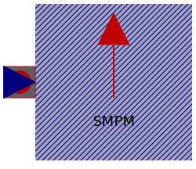

| Name | Description |
|---|---|
|  ThermalAmbientSMPM | Thermal ambient for synchronous induction machine with permanent magnets |
|
|
Thermal ambient for synchronous induction machine with electrical excitation |
| ThermalAmbientSMR | Thermal ambient for synchronous induction machine with reluctance rotor |